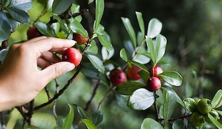
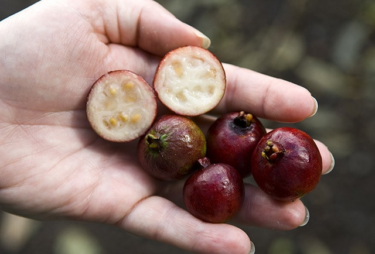
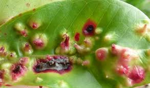

All Informations:
Who & How
Strawberry Guava, Scientific Name: Psidium cattleyanum, It was originally introduced to Hawaiians by Brazilians in the early 1800s as a source of consume and friendship thoghts, however, this friendly act has caused Hawaii thousands of dollars and had damaged the ecosystem of Hawaii on a massive scale.

What
It is a producer that makes juicy fruits, since it came from Brazil, there are lack of predators for the Strawberry Guava trees, however, it currently plays a role of providing non native birds and pigs for their daily consumes. However, due to its natural characteristic of spreading its seeds by air, and since it have already been on every single island of Hawaii, it had robbed many Native Hawaiian species in farmer’s plantation and in the natural forests. It has been classified as one of the most destructive specie in Hawaii. Also “ Poses major threat to Hawaii’s rare endemic flora and fauna, forming shade-casting thickets with dense mats of surface feeder roots”(US Forest Service).
Where & What's Next?
Originally, the Strawberry Guavas was only introduced to the Big Island, however after its characteristic of spreading its seeds in the air, other island have gotten infected by this tree too. There are indeed ways to control it growth in Hawaii, however, due to its characteristic of capable growing in the high mountains and in area with often rain falling, it becomes harder and harder to use hand only to control it. Recently people have cut their roots and their stems or using herbicides to control it’s growth, but the amount of reproduced Strawberry Guavas outnumbered the amount of controlled Guavas.


Isn't there any insect that can kill it?
in 2005, after a 15 years research, the Hawaiian scientists brought a type of Brazilian scale called the Tectococcus ovatus. This type of scale only feed on the strawberry guavas, it tend to float in the air and land on the stem or the leaves of the trees, which then it almost “consume” all of the energies and resources the tree have, which weakens the tree and makes it grow in a way slower speed. However, this type of parasitic relationships will not last long, if one day the strawberry guavas have become less tense and started to die off, then the scale will also be dying off.